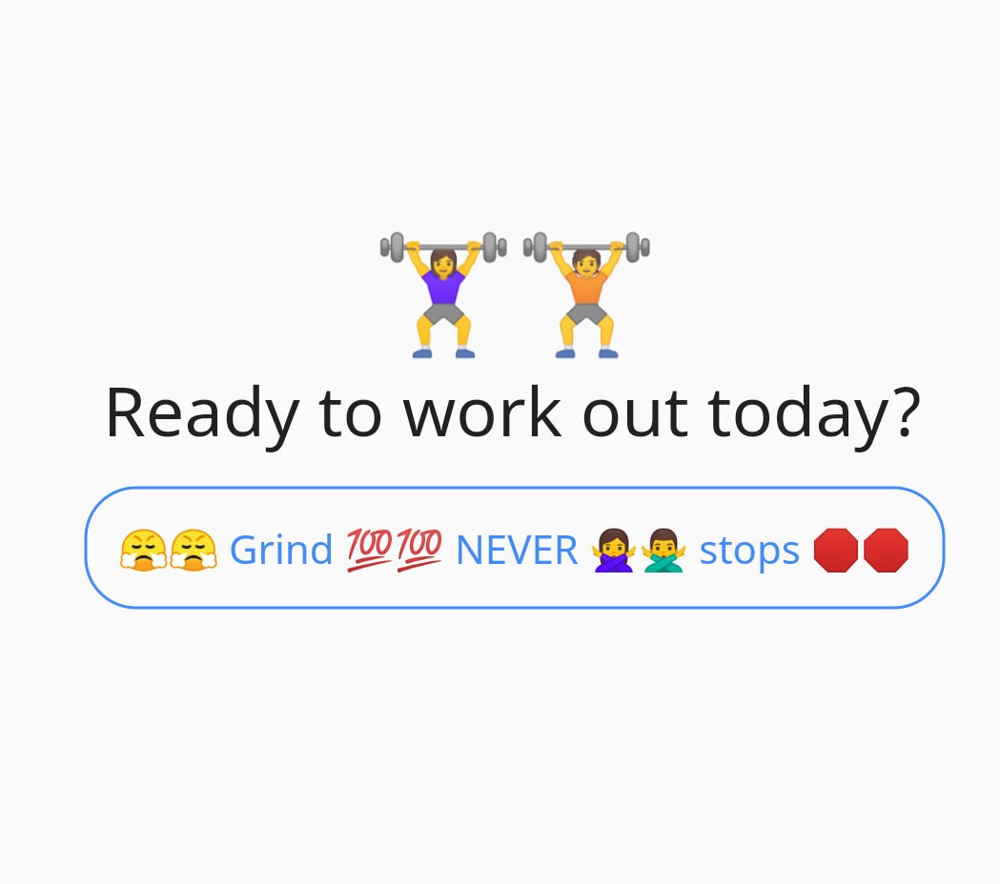
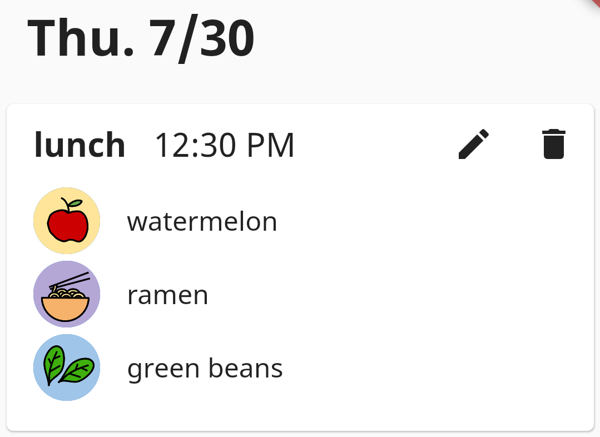
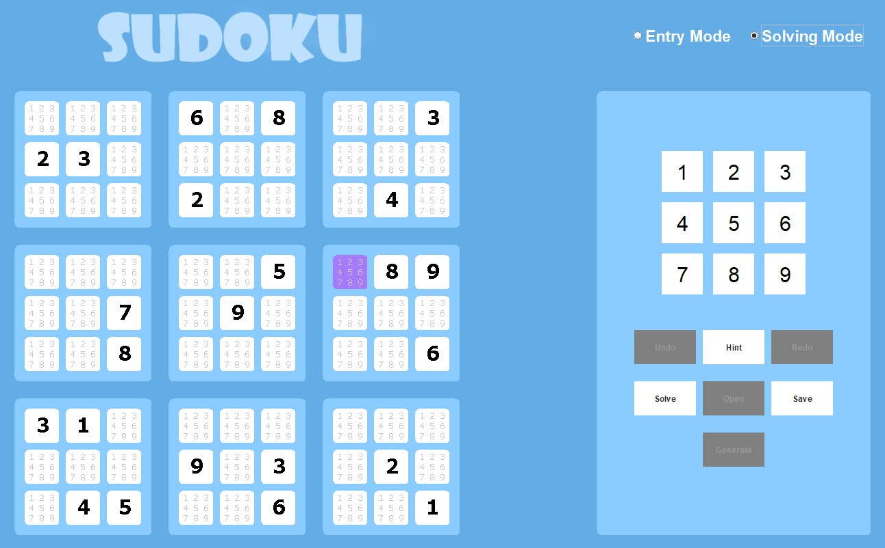
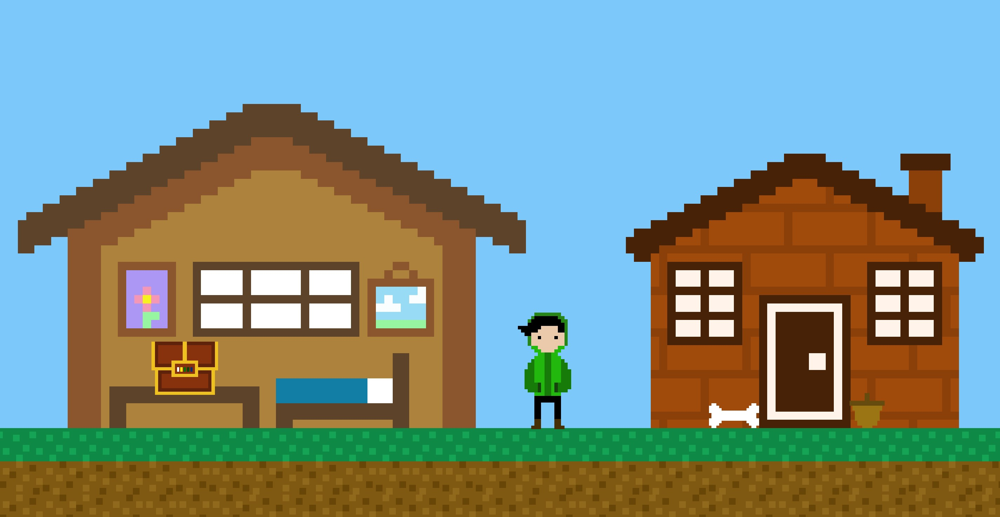
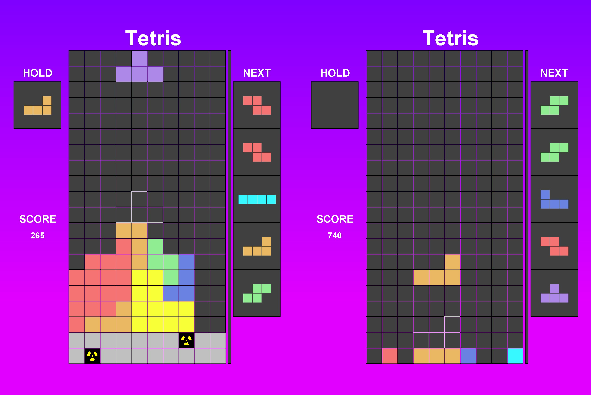
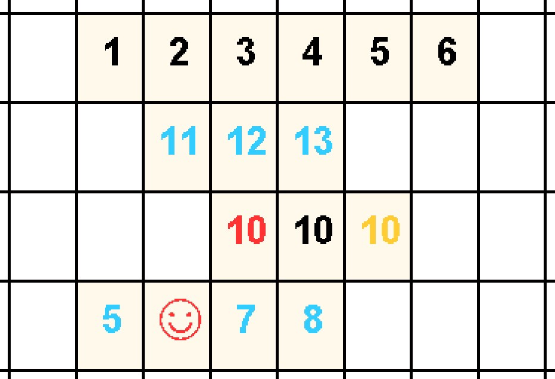

Currently working on:
Personal projects
Exercise Generator
A Flutter app that generates a workout from a list of exercises

Ins & Outs
A Flutter app for tracking food and symptoms to help with identifying possible food intolerances

helenxuyang.github.io
How's that for recursion? My first project for learning HTML/CSS on my long journey to learn about webdev :)

Past projects
High school
I took two CS classes in high school: AP Computer Science A (CSA) in my junior year, and Advanced Object-Oriented Design (AOOD) in my senior year. Here are some of the projects I'm proud of!
Sudoku
AOOD group project: a Sudoku game built with our teacher as the client

BadRPG
AOOD partner project: an RPG full of puns with a self-aware name

Tetris
CSA partner project: Tetris with single and two player modes

Rummikub
CSA picture project: Local multiplayer Rummikub board game
